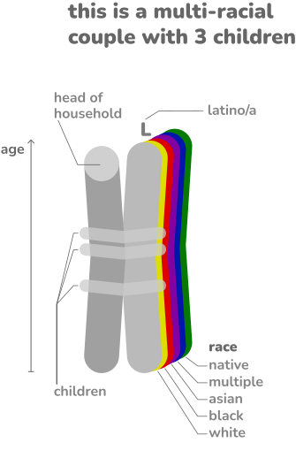

diversity traces
an interactive lens on multi-racial families in the United States · 1860-2020
When looking at diversity from a racial perspective, homogenous communities are still the norm, as they remain siloed not only locally, but in their very own households as well. This visualization project comes as a celebration of the fringe couples and families who have a multi-racial identity, effectively embodying the intermingle of races, and dissolving the systemic barriers put on their very own existence. According to the census, there are only vestiges of these multi-racial families from 1860 to 1980. More recently, there as been a surge of these families in the data, but they are still a rarity, still mere traces of diversity in America.
In this visualization you can see every registered multi-racial couple in America, for recent periods in 1-5% samples of the population, and for older periods in 100% samples of the population. Each couple is represented as a colorful chromosome, enabling you to see the races within each family, their ages, sexes, and children. For each year, these couples are organized by rarest multi-racial group first, by ascending average age of the couple, and by number of children. This means that in each group you will first see couples with no children, but as you navigate towards the end a group, you will see couples with more children. Only in recent years you will be able to see same-sex couples. In addition to race, individuals who identify themselves as latino/as are also marked with an L.
percentage of couples in
the United States
are multi-racial
visualizing xxxx multi-racial couples
out of a total of XXXXXXX couples
in a XX sample of the U.S. population
+info